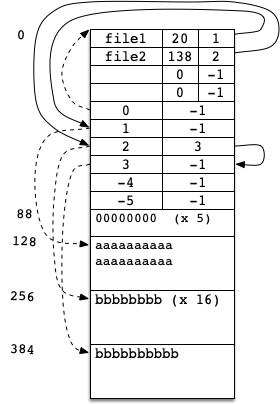

Your task in this assignment is to implement a simulated file
system. The simulated file system (simfs) is stored in a single Unix file.
There is only one directory in this file system, and there are limits on the
number of files (MAXFILES) it can store and the amount of space
(MAXBLOCKS) it can occupy. The key file system structures are already
defined; your job is to add functions: the ability to create a file,
delete a file, write to a file, and read from a file.
In completing this assignment, we expect you will learn about how file systems are implemented, will become familiar with both binary and ASCII file I/O, and will become comfortable using arrays of structs and characters.
Submit your assignment by committing all your source code, header files, and Makefile to your
repository under the a1 directory. Please do not commit .o files or
executable files. Do not modify the Makefile or simfstypes.h.
Note that you must submit your work to your git repository on Markus. That is, you cannot submit through its normal web interface.
Assignments are individual work which means that you will not be allowed to seek advice from other students or copy/paste someone else's code, even open-source codes from the internet. However, you are allowed to look at online resources, tutorials, and Q&A websites to solve the problems. The entire code must be written by yourself.
simfs should be thought of as an array of blocks. Each block is a contiguous chunk
of BLOCKSIZE bytes. Metadata (described below) is stored at the beginning of the file in
the first (or first few) blocks. The simulated file system, simfs, contains two types of metadata: file
entries (fentries) and file nodes (fnodes).
A fentry contains:
An fnode contains:
There are a fixed number of fentries and a fixed number of fnodes, so it is possible to calculate how much space they
will take. The array of fentries is stored at the very beginning of the file, followed immediately after by the array of fnodes. The number of blocks required to store the fentries and fnodes depends on how many of them
there are (MAXFILES and MAXBLOCKS). See simfstypes.h for the definitions
of these constants as well as for the structs defined in the previous bullets.
For example, suppose the maximum number of files is 4 and the maximum number of fnodes is 6. The block size is set to 128. The fentry and fnode arrays take 88 bytes ((16*4) + (4 * 6) = 88), so they can fit in a single block. As a result, the first fnode is in use (block 0 contains metadata), and file data begins in the second block (index 1). The real file containing the simulated file system would be arranged as shown in the following diagram. Please note that the boxes are not scaled according to the number of bytes they occupy.
Note that it is a good idea to set the maximum number of files and blocks so that they fit in exactly N blocks (where N is an integer), to avoid wasting space. However, like the example above, you may not assume this is the case; there may be wasted bytes between them and the start of the file data.
Also note that file data blocks for a particular file will not necessarily be next to each other, though the example above does have them together. It is possible for a file to be in blocks 1 and 3, for example, with another file at block 2.
You can download the starter code here.
You may not modify the structs defined in simfstypes.h, and you
should not change the Makefile, but you may
modify any other code. You may find that you want to
refactor some of the provided code to pull out common code snippets into
helper functions.
The following subsections describe the contents of the provided files.
The file for building the program. The makefile is structured so that only the files that are changed need to be recompiled. Please do not modify this file; your code should compile with the flags specified.
Contains the type definitions for the metadata structures that
locate files in the file system and defines file system parameters, such
as MAXFILES.
You will probably want to change the constants to smaller values when you are developing your program. It will make it easier to see the results. Later, you may want to increase the values in order to test more complex operations. However, none of your changes will affect our testing; we will replace this file with our own when we test. As a result, you should not commit any changes to this file; your code should work with the original version.
Contains function prototypes that are shared among the files. You are welcome to add more prototypes as you add or refactor code.
The main program. The main function parses the arguments, and calls the functions for the appropriate commands. You will need to modify the switch statement as you add new commands.
Contains the initfs function that initializes the file
system structure in the file specified by the filename argument to
initfs.
Warning: If the file already exists, then initfs
will overwrite it.
Start by creating a filesystem using initfs. Then, examine that file
system file with both the Unix xxd utility and the provided printfs function. Try varying the MAXFILE
and MAXBLOCK values to see how that affects what is written.
The printfs function prints the contents of the file that
stores the simulated filesystem in a readable form. This is a convenience function.
You could use xxd to read the binary data, but it is more convenient to have a
command to print the metadata in a human readable format.
You'll do the majority of your work here. The file already contains two helper functions that open a file system. You should add other helper functions and functions for the four required file system operations here.
You will write functions to implement the operations below. These operations should
work for any positive, valid values of BLOCKSIZE, MAXFILES, or MAXBLOCKS. (Valid values will not cause the short values in the structs to overflow.)
createfile)The createfile command takes a single argument: a simulated file name.
It will create an empty file of that name on the file system if it is possible to do so, using
the first available fentry. If there are not enough resources on the file system, an error should be emitted.
deletefile)The deletefile command also takes a single argument: a simulated file name.
It should remove the file from the file system, including freeing any blocks used to store
the file. To avoid malicious use of old data, your operation should overwrite the file data
with zeroes.
readfile)
The readfile command takes 3 arguments:
When this command is received, the file system will print the requested data to
stdout. If any part of the request cannot be completed, an error should be emitted to
stderr; for example, if the start position is larger than size of the file.
(In the case of an error, we don't care what, if anything, is emitted to stdout.)
writefile)The writefile command takes 3 arguments:
When this command is received, the file system will write the requested data from
stdin. Like the read operation, if any part of this request cannot be completed,
an error should be emitted. For example, if the start position is larger than
the current size of the file, an error should be emitted, since we don't know what to write in
the intervening bytes. Also, if the file system doesn't have enough free blocks available for the
write, then an error should be emitted.
In any error case, it is imperative that no changes be made to the filesystem. The file system cannot be left in an inconsistent state; the whole operation must be completed, or none of it.
Whenever a new data block is allocated, initialize it to zeros (the binary value, not the ASCII character). This will help with debugging.
Thorough error checking is required for this assignment. Your program should never crash (segmentation fault or bus error), and it should endeavour to never leave the file system in an inconsistent state. To do this, you should check the return values of all library calls and verify that all resources (file slots, block slots) are available before beginning to modify the file system. it is also highly recommended that you use valgrind to check your use of memory.
If an error is detected, print an appropriate error message to stderr and exit with a nonzero exit value. The
error message should name the operation being attempted and should describe the issue
encountered. No messages should be printed to stderr that are not errors.
This is my fourth time taking CSC209, and inarguably, this is the best assignment I've ever seen.
Problems are so accurately designed that anyone with their own knowledge and experience have their own takeaways.
I hope next assignments will be this good, too!
Thanks bro!